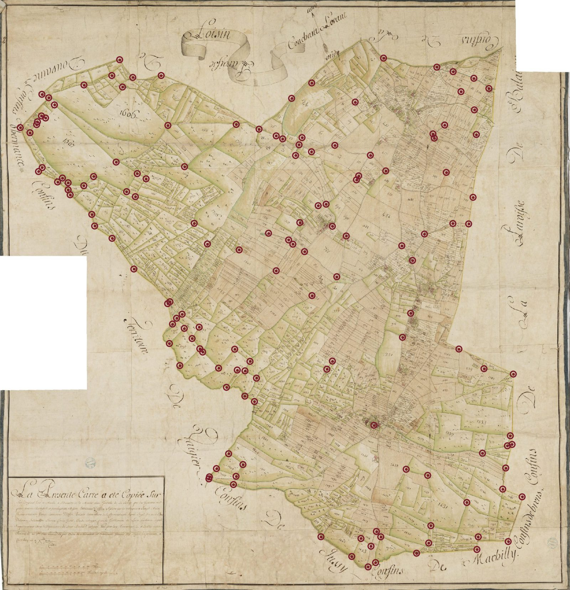
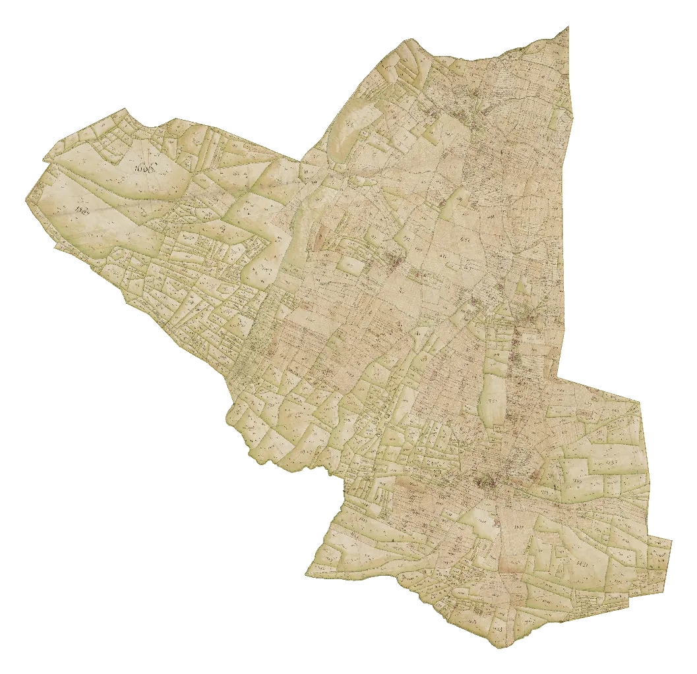
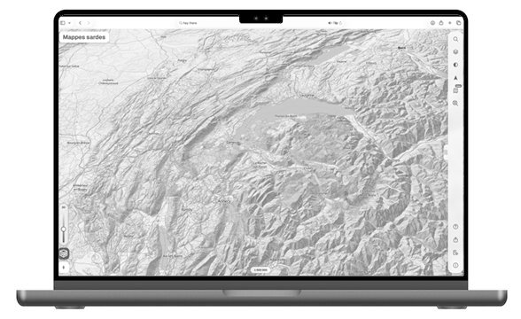
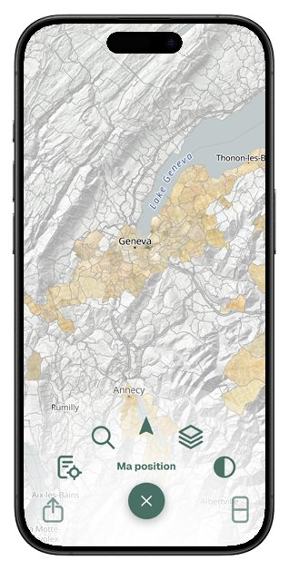

Superposer le territoire de 1730 et celui d'aujourd'hui, parcelle par parcelle
Chaque mappe sarde est calée sur le cadastre actuel, découpée à la limite de sa paroisse et assemblée avec ses voisines, puis publiée sur un site cartographique ouvert. Le cadastre sarde couvre tout l'ancien duché : 290 originaux et 310 copies, conservés aux Archives départementales de la Haute-Savoie et aux Archives d'État de Genève.
Les outils existants, comme « Remonter le temps » de l'IGN ou le « Voyage dans le temps » de swisstopo, montrent surtout des photos aériennes anciennes. Les cadastres y sont rares, malgré leur couverture complète.
118 paroisses traitées, de Genève au Mont-Blanc
101 paroisses · 1 821 km²
17 paroisses · 138 km²
Une mappe compte en moyenne 202 points pour 15 km². Le nombre de points va de 11 (Abondance, 4ᵉ feuille) à 1 477 (Talloires) : il suit surtout le nombre de repères encore visibles sur le terrain.

De l'image d'archives à la carte en ligne, en cinq étapes
Tout se fait dans QGIS, un logiciel libre. Le pointage est manuel ; une fois les points placés, le reste est automatisé et prend quelques minutes par mappe.
- PréparerRéassembler les vues numérisées des archives.
- PointerRelier un coin d'église, un carrefour, un pont à sa position actuelle.
- ProjeterChoisir la transformation, le plus souvent un polynôme de degré 3.
- DécouperGarder la paroisse seule, sans marges ni cartouche.
- AssemblerHarmoniser les teintes et superposer les mappes voisines.



Peut-on s'y fier ? Un indice de précision par mappe
L'indice combine l'écart résiduel des points (en mètres, par rapport au cadastre actuel), leur densité et la part de la paroisse bien couverte. Il ne pénalise pas les mappes de montagne, où les repères sont rares.
Un site ouvert, sur ordinateur comme sur téléphone
Le site réunit les mappes assemblées et des données publiques. Les visiteurs peuvent aussi proposer leurs propres géoréférencements dans Allmaps ; ils sont vérifiés avant d'être intégrés.
- Géolocalisation
- Comparaison de deux fonds de carte
- Recherche d'adresse
- Plans PDF et maquettes 3D
- Réalité augmentée
- Fiches et cotes d'archives par paroisse
- Contributions des visiteurs
- Consultation des géodonnées
Sources : images d'archives de la Haute-Savoie (IIIF), SITG (plan Micheli 1730, orthophoto 1932), IGN Géoplateforme (cadastre, orthophoto 1950-1965), swisstopo, Mapterhorn (relief), OpenFreeMap et Esri (fonds de carte), BAN et OpenStreetMap (adresses).


Finir la Haute-Savoie, puis aller vers un outil de connaissance du territoire
Il reste environ 200 paroisses haut-savoyardes à traiter. À terme, le projet s'inscrit dans l'esprit de la Time Machine de l'EPFL (Frédéric Kaplan et Isabella di Lenardo) : relier les sources anciennes au territoire actuel pour le comprendre et le projeter.